건설기계설비기사 (2007-03-04 기출문제)
1과목: 재료역학
1. 그림과 같은 형태로 분포하중을 받고 있는 단순지지보가 있다. 지지점 A에서의 반력 RA는 얼마인가? (단, 분포하중
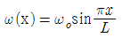
)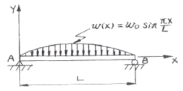
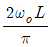
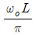
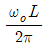
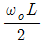
(정답률: 알수없음)

2. 평면 응력상태에서 σx=100MPa, σy=50MPa일 때 x방향과 y방향의 변형율 εx, εy는 얼마인가? (단, 이 재료의 탄성계수 E=210 GPa, 포와송 비 μ=0.3이다.)
- εx=202×10-6, εy=46×10-6
- εx=404×10-6, εy=95×10-6
- εx=404×10-6, εy=404×10-6
- εx=808×10-6, εy=190×10-6
(정답률: 알수없음)
3. 단면[폭×높이]이 4cm×6cm이고 길이가 2m인 단순보의 중앙에 집중하중이 작용할 때 최대처짐이 0.5cm라면 집중하중은 몇 N인가? (단, 탄성계수 E=200GPa이다.)
- 5520
- 3300
- 2530
- 4320
(정답률: 알수없음)
4. 축 방향의 단면에 균일한 인장응력 10MPa이 작용하고 있다면 이 때 체적 변형률 εν는? (단, 포와송의 비 μ=0.3, 탄성계수 E=210GPa이다.)
- 1.6×10-5
- 1.7×10-5
- 1.8×10-5
- 1.9×10-5
(정답률: 알수없음)
5. 그림에 표시된 사각형 단면의 짧은 기둥에서 e=2mm 되는 곳에 100kN의 압축 하중이 작용할 때 발생되는 최대응력은?
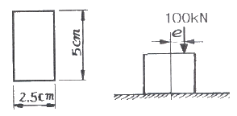
- 39.6 MPa
- 56.2 MPa
- 83.7 MPa
- 118.4 MPa
(정답률: 알수없음)
6. 탄성계수가 E1, E2 인 두 부재 ①, ②가 그림과 같이 합성된 구조물로 압축하중 P를 받고 있다. ①, ②에 발생되는 응력의 비는?
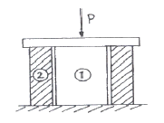
- σ1/σ2 = E2/E1
- σ1/σ2 = E1/E2
- σ1/σ2 = E2/(E1+E2)
- σ1/σ2 = E1/(E1+E2)
(정답률: 알수없음)
7. 2축 응력상태에서 σx=-σy=140 MPa 이고 재료의 전단탄성계수 G=84GPa이면 전단 변형률 γ는?
- 0.87×10-3
- 1.23×10-3
- 1.67×10-3
- 1.89×10-3
(정답률: 알수없음)
8. 높이 h, 폭 b인 직사각형 단면을 가진 보와 높이 b, 폭 h인 단면을 가진 보의 단면 2차 모멘트의 비는? (단, h=1.5b)
- 1.5 : 1
- 2.25 : 1
- 3.375 : 1
- 5.06 : 1
(정답률: 알수없음)
9. 중공 축의 내부 직경이 40mm, 외부 직경이 60mm 일 때, 최대 전단응력이 120 MPa를 초과하지 않도록 적용할 수 있는 최대 비틀림 모멘트는 몇 kN·m인가?
- 1.02
- 2.04
- 3.06
- 4.08
(정답률: 알수없음)
10. 그림과 같은 직사각형 단면을 갖는 단순지지보에 3kN/m의 균일 분포하중과 축방향으로 50 kN의 인장력이 작용할 때 최대 및 최소 응력은?
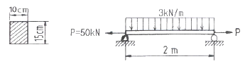
- 4 MPa 인장, 3.33 MPa압축
- 4 MPa 압축, 3.33 MPa인장
- 7.33 MPa 인장, 0.67 MPa 압축
- 7.33 MPa 압축, 0.67 MPa 인장
(정답률: 알수없음)
11. 직경이 1.5m, 두께가 3mm인 원통형 강재 용기의 최대 사용강도가 240 MPa 일 때 지탱할 수 있는 한계 압력은 몇 kPa인가? (단, 안전계수는 2이다.)
- 240
- 480
- 720
- 960
(정답률: 알수없음)
12. 재료가 동일한 길이 L, 지름 d인 축과 길이 2L, 지름 2d인 축을 동일각도 만큼 변위시키는데 필요한 비틀림 모멘트의 비 T1/T2의 값은 얼마인가?
- 1/4
- 1/8
- 1/16
- 1/32
(정답률: 알수없음)
13. 알루미늄의 탄성계수는 약 7GPa이다. 길이 20cm, 단면적 10cm2인 봉을 축력을 받는 스프링으로 사용하려할 때, 스프링 상수는 몇 MN/m인가?
- 3.5
- 35
- 7
- 70
(정답률: 알수없음)
14. 다음 그림에서 임의의 θ단면에서 굽힘모멘트의 크기는?
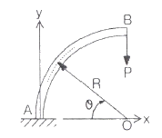
- PR(1-cosθ)
- PRcosθ
- PR(1-sinθ)
- PRsinθ
(정답률: 알수없음)
15. 평면응력 상태에서 σx=300MPa, σy=-900MPa, τxy=450 MPa일 때 최대 주응력 σ1은 몇 MPa인가?
- 1150
- 300
- 450
- 750
(정답률: 알수없음)
16. 다음 그림과 같이 반지름이 a인 원형단면의 원주에 접하는 축(x′)에 대한 단면 2차 모멘트는?
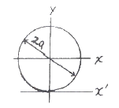
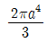
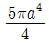
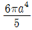
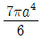
(정답률: 알수없음)
17. 부재의 양단이 자유롭게 회전할 수 있도록 부하되고, 길이가 4 m이고 단면이 직사각형(100 mm × 50mm)인 압축 부재의 좌굴 하중을 오일러 공식으로 구하면 몇 kN인가? (단, 탄성계수 E = 100 GPa 이다.)
- 52.4 kN
- 64.4 kN
- 72.4 kN
- 84.4 kN
(정답률: 알수없음)
18. 그림과 같이 정삼각형 형태의 트러스가 길이 150cm인 2개의 봉으로 조립되어 절점 B에서 수직하중 P = 15000N을 받고 있다. 이 두 봉은 같은 단면적과 같은 재료를 사용하였다면 B점의 수직변위 δν는? (단, 탄성계수 E = 210 GPa, 단면적 A = 1.56 cm2이다.)
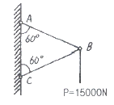
- 0.00137 mm
- 0.137 mm
- 0.0137 mm
- 1.37 mm
(정답률: 알수없음)
19. 그림과 같은 균일분포하중 ω kM/m를 받는 단순보에서 중앙점의 처짐을 0으로 하고자 할 때, 아래에서 위로 받쳐주어야 하는 힘 P는?
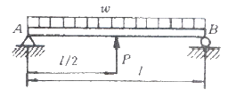
- P = ωℓ
- P =
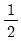
ωℓ - P =
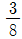
ωℓ - P =
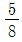
ωℓ
(정답률: 알수없음)
20. 안지름이 25 mm, 바깥 지름이 30 mm인 중공 강철관에 10 kN의 축인장 하중을 가할 때 인장응력은 몇 MPa인가?
- 14.2
- 20.3
- 46.3
- 145.5
(정답률: 알수없음)
2과목: 기계열역학
21. 다음 중 1kg의 질량이 있는 어떤 계가 가역적으로 상태 1에서 2로 바뀔 때 열을 나타내는 것은?
- T-s 선도에서의 아래 면적
- h-s 선도에서의 아래 면적
- p-v 선도에서의 아래 면적
- p-h 선도에서의 아래 면적
(정답률: 알수없음)
22. 물질의 양에 따라 변화하는 종량적 상태량은?
- 밀도
- 체적
- 온도
- 압력
(정답률: 알수없음)
23. 해수면 아래 20m 에 있는 수중다이버에게 작용하는 절대압력은? (단, 대기압은 101kPa이고, 해수의 비중은 1.03이다.)
- 202.9 kPa
- 302.9 kPa
- 101.3 kPa
- 503.4 kPa
(정답률: 알수없음)
24. 대기압 하에서 물질의 질량이 같을 때 엔탈피의 변화가 가장 큰 경우는?
- 100°C 물이 100°C 수증기로 변화
- 100°C 공기가 200°C 공기로 변화
- 90°C 물이 91°C 물로 변화
- 100°C 구리가 115°C 구리로 변화
(정답률: 알수없음)
25. 1kg의 기체로 구성되는 밀폐계가 50 kJ/kg의 열을 받아 15 kJ/kg의 일을 했을 때 내부에너지 변화는? (단, 운동에너지의 변화는 무시한다.)
- 약 65kJ
- 약 26kJ
- 약 15kJ
- 약 35kJ
(정답률: 알수없음)
26. 아래 그림과 같은 이상 열펌프의 각 상태에서 엔탈피는 다음과 같다. 열펌프의 성능계수는? (단, h1 = 155kJ/kg, h3 = 593kJ/kg, h4 = 827kJ/kg이다.)
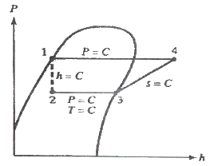
- 2.9
- 3.5
- 1.8
- 4.0
(정답률: 알수없음)
27. 작동 유체가 상태 1부터 상태 2까지 가역 변화할 때의 엔트로피 변화로 가장 옳은 것은?
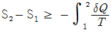
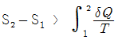
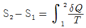
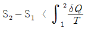
(정답률: 알수없음)
28. 압력 101kPa이고, 온도 27°C 일 때, 크기가 5m × 5m × 5m인 방에 있는 공기의 질량을 계산하면? (단, 공기의 기체상수는 287 J/kgK이다.)
- 약 117 kg
- 약 137 kg
- 약 127 kg
- 약 147 kg
(정답률: 알수없음)
29. 마찰이 없는 피스톤과 실린더로 구성된 밀폐계에 분자량이 25인 이상기체가 2kg 있다. 기체의 압력이 100 kPa로 일정할 때 체적이 1m3에서 2m3로 변화한다면 이 과정 중 열 전달량은? (단, 정압비열은 1.0 kJ/kgK 이다.)
- 약 150 kJ
- 약 202 kJ
- 약 268 kJ
- 약 300 kJ
(정답률: 알수없음)
30. Joule의 실험에 의하면 이상기체의 내부에너지는 온도만의 함수이다. 이의 결과에 합당하지 않은 것은?
- 이상기체 정압비열은 온도만의 함수이다.
- 이상기체 정적비열은 온도와 관계없이 일정하다.
- 이상기체 정압비열과 이상기체 정적비열의 차이는 온도와 관계없이 일정하다.
- 이상기체 엔탈피는 온도만의 함수이다.
(정답률: 알수없음)
31. 오토 사이클의 압축비가 6인 경우 이론 열효율은 약 몇 % 인가? (단, 비열비 = 1.4 이다.)
- 51
- 61
- 71
- 81
(정답률: 알수없음)
32. 산소 2몰과 질소 3몰을 100kPa, 25°C에서 단열정적 과정으로 혼합한다. 이때 엔트로피 증가량은 약 얼마인가? (단, 일반기체상수 R = 8.31434 KJ/kmol∙K 이다.)
- 25 J/K
- 2⑤ J/K
- 28 J/K
- 3⑤ J/K
(정답률: 알수없음)
33. 열효일이 25%이고 수증기 1kg당 출력이 800kJ/kg인 증기기관의 증기소비율은 몇 kg/kWh인가?
- 1.125
- 4.5
- 800
- 18
(정답률: 알수없음)
34. 실린더 내의 이상기체 1kg이 27°C를 일정하게 유지하면서 200 kPa에서 100 kPa 까지 팽창하였다. 기체가 수행한 일은? (단, 이 기체의 기체상수는 1kJ/kgK 이다.)
- 27kJ
- 208kJ
- 300kJ
- 433kJ
(정답률: 알수없음)
35. 227°C의 증기가 500 kJ/kg의 열을 받으면서 가역등온팽창한다. 이 때의 엔트로피의 변화는 약 얼마인가?
- 1.0 kJ/kgK
- 1.5 kJ/kgK
- 2.5 kJ/kgK
- 2.8 kJ/kgK
(정답률: 알수없음)
36. 열과 일에 대한 설명 중 맞는 것은?
- 열과 일은 경계현상이 아니다.
- 열과 일의 차이는 내부에너지만의 차이로 나타난다.
- 열과 일은 항상 양의 수로 나타낸다.
- 열과 일은 경로에 따라 변한다.
(정답률: 알수없음)
37. P - V 선도에서 그림과 같은 변화를 갖는 이상기체가 행한 일은?
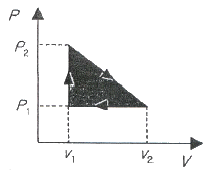
- P2(V2-V1)
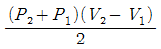
- P1(V2-V1)
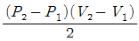
(정답률: 알수없음)
38. 다음 그림은 오토사이클의 P-V선도이다. 그림에서 3-4가 나타내는 과정은?
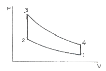
- 단열 압축과정
- 단열 팽창과정
- 정적 가열과정
- 정적 방열과정
(정답률: 알수없음)
39. 250K에서 열을 흡수하여 320K에서 방출하는 이상적인 냉동기의 성능 계수는?
- 0.28
- 1.28
- 3.57
- 4.57
(정답률: 알수없음)
40. 10냉동 톤의 능력을 갖는 카르노 냉동기의 응축온도가 25°C, 증발 온도가 -20°C이다. 이 냉동기를 운전하기 위하여 필요한 이론 동력은 몇 kW인가? (단, 1냉동 톤은 3.85kW이다.)
- 6.85
- 4.65
- 2.63
- 1.37
(정답률: 알수없음)
3과목: 기계유체역학
41. 다음 중에서 이상기체에 대한 음파의 속도가 아닌 것은? (단, ρ : 밀도, P : 압력, V : 속도, k : 비열비, g : 중력가속도, R : 기체상수, T : 절대온도, s : 엔트로피)
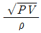
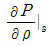
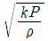
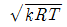
(정답률: 알수없음)
42. 그림과 같이 U자관 액주계가 x방향으로 등가속 운동하는 경우 x방향 가속도 ax 는? (단, 수은의 비중은 13.6이다.)
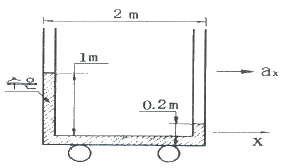
- 0.4 m/s2
- 0.98 m/s2
- 3.92 m/s2
- 4.9 m/s2
(정답률: 알수없음)
43. 아래 그림과 같이 폭이 3m이고, 높이가 4m인 수문의 상단이 수면 아래 1m에 놓여 있다. 이 수문에 작용하는 압력에 의한 외력의 작용점은 수면 아래로 몇 m 인가?
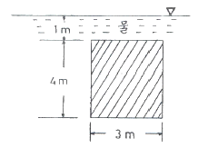
- 4.77 m
- 3.44 m
- 2.36 m
- 1.86 m
(정답률: 알수없음)
44. 고속도로 톨게이트의 폭이 도로에 비하여 넓게 만들어진 이유를 가장 적절하게 설명해 줄 수 있는 것은?
- 연속방정식
- 에너지 방정식
- 베르누이 방정식
- 열역학 제2법칙
(정답률: 알수없음)
45. 지름 0.015 m의 구가 공기 속을 28 m/s의 속도로 날아가는 경우 항력은 몇 N인가? (단, 공기의 밀도는 1.23 kg/m3, 동점성계수는 0.15cm2/s, 항력계수는 CD = 0.5 이다.)
- 3.56 × 10-4
- 2.25 × 10-3
- 4.26 × 10-2
- 5.64 × 10-4
(정답률: 알수없음)
46. (r, θ) 극좌표계에서 속도 포텐셜 ø = 2θ 에 대응하는 원주방향 속도(vθ)는?
- 4π / r
- 2 / r
- 2r
- 4πr
(정답률: 알수없음)
47. 유체를 정의한 것 중 가장 옳은 것은?
- 용기 안에 충만될 때까지 항상 팽창하는 물질
- 흐르는 모든 물질
- 흐르는 물질 중 전단 응력이 생기지 않는 물질
- 극히 작은 전단응력이 물질 내부에 생기면 정지 상태로 있을 수 없는 물질
(정답률: 알수없음)
48. 절대압력을 정하는데 기준(영점)이 되는 것은?
- 게이지 압력
- 표준대기압
- 국소대기압
- 완전진공
(정답률: 알수없음)
49. 어떤 오일의 동점성계수가 2×10-4m2/s이고 비중이 0.9라면 점성계수는 몇 kg/(m∙s)인가? (단, 물의 밀도는 1000 kg/m3 이다.)
- 0.2
- 2.0
- 0.18
- 1.8
(정답률: 알수없음)
50. 그림과 같이 직경 비가 2:1인 벤츄리 관에서 압력차 ⩟P를 바르게 표현한 것은? (단, ρ는 유체의 밀도)
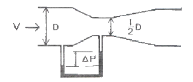
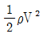
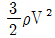
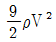
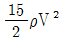
(정답률: 알수없음)
51. 차원 해석에 있어서 반복 변수(repeating parameter)의 선정 방법으로 가장 적합한 것은?
- 별로 중요하지 않는 변수도 포함시켜야 한다.
- 기본차원을 모두 포함하며 서로 종속이 아닌 변수로 택하여야 한다.
- 가능하면 같은 차원을 갖는 2개의 변수(물리량)를 포함시켜야 한다.
- 각 변수로부터 한 개의 차원을 제거시켜야 한다.
(정답률: 알수없음)
52. 물체 표면에 가까운 곳에서 속도 분포가 u = uo sin ky로 표시될 수 있다고 할 때 물체 표면에 작용하는 전단응력은 어느 것으로 표시되는가? (단, uo는 주류부의 유속, k는 상수, y는 물체 표면에 수직한 방향의 좌표, μ는 점성 계수이다.)
- 0
- μ uo sin ky
- μ uo cos k
- μ kuo
(정답률: 알수없음)
53. 지름이 70 mm 인 소방노즐에서 물제트가 50 m/s의 속도로 건물 벽에 수직으로 충돌하고 있다. 벽이 받는 힘은 약 몇 kN 인가? (단, 물의 밀도는 1000 kg/m3 이다.)
- 21.2
- 5.50
- 7.42
- 9.62
(정답률: 알수없음)
54. 어떤 물리적인 계(system)에서 관성력, 점성력, 중력, 표면정력이 중요하다. 이 시스템과 관련된 무차원수가 아닌 것은?
- 웨버수
- 레이놀즈수
- 프루드수
- 오일러수
(정답률: 알수없음)
55. 지름 0.4 m인 관에 물이 0.5m3/s로 흐를 때 길이 300 m에 대해서 동력손실은 60 kw였다. 이때 관마찰계수 f는? (단, 물의 비중량은 9800 N/m3 이다.)
- 0.015
- 0.02
- 0.025
- 0.03
(정답률: 알수없음)
56. 다음 그림과 같이 축소되는 사각형 덕트에 어떤 유체가 흐르고 있다. 그림에 표시된 0지점에서 속도분포를 측정한 결과 다음 식과 같이 y만의 함수이다.
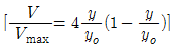
, yo=50 mm이고, Vmax = 1 m/s인 경우에 총 유량(m3/s)은?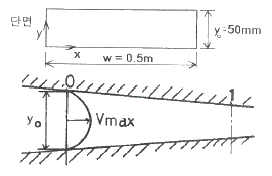
- 1/60
- 1/120
- 1/180
- 1/240
(정답률: 알수없음)
57. 지름이 10 cm인 파이프에 물(밀도=1000 kg/m3)이 평균속도 5m/s로 흐를 때, 마찰계수가 0.02라고 한다. 이 파이프가 그림과 같이 30° 경사지게 놓여있고 물이 위로 흐르면 파이프 1 m 당 압력 변화는 얼마인가?
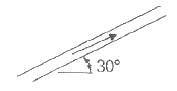
- 2.55 kPa 감소
- 4.95 kPa 증가
- 7.35 kPa 감소
- 12.35 kPa 증가
(정답률: 알수없음)
58. 그림과 같이 곡면판이 제트를 받고 있다. 제트속도 V m/s, 유량 Q m3/s, 밀도 ρ kg/m3, 유출방향을 θ라하면 제트가 곡면판에 주는 x 방향의 힘을 나타내는 식은?
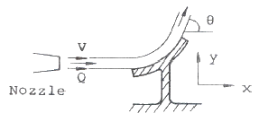
- ρQV2cosθ
- ρQVcosθ
- ρQVsinθ
- ρQV(1-cosθ)
(정답률: 알수없음)
59. 수평 원관 속의 층류 유동에서 하겐-포아젤 방정식을 나타내는 것은? (단, μ는 점성계수, Q는 유량, P는 압력을 나타낸다.)
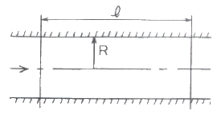
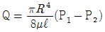
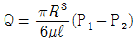
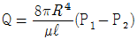
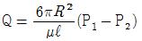
(정답률: 알수없음)
60. 지름이 1 cm인 원통 관에 0℃ 의 물이 흐르고 있다. 평균속도가 1.2 m/s이고, 0℃ 물의 동점성계수가 ν = 1.788×10-6m2/s 일 때, 이 흐름의 레이놀즈수는?
- 2356
- 4282
- 6711
- 7801
(정답률: 알수없음)
4과목: 유체기계 및 유압기기
61. 내연기관에서 가스압력이 미는 힘은 300N, 관성력이 50N이고, 커넥팅 로드 각이 30° 일 경우 커넥팅 로드의 길이 방향으로 작용하는 힘(Fc)과 실린더 축에 직각인 힘(Fs)은 각각 얼마인가?
- 390N, 300N
- 404N, 202N
- 300N, 390N
- 202N, 404N
(정답률: 알수없음)
62. 기관 본체의 소음 원인으로 짝지어진 것은?
- 연소 소음, 기계 소음
- 연소 소음, 배기 소음
- 흡기 소음, 배기 소음
- 흡기 소음, 기계 소음
(정답률: 알수없음)
63. 디젤 기관의 진동방지를 위하여 특히 주의해야 할 사항이 아닌 것은?
- 크랭크축과 평형추의 조정
- 피스톤과 커넥팅 로드의 조립품의 중량차
- 각 실린더의 연료 분사시기 및 분사량
- 윤활유 펌프의 유압조정
(정답률: 알수없음)
64. 다음에 열거한 디젤기관의 연소실 중 가장 노크를 일으키기 쉬운 연소실은?
- 직접분사식
- 예연소실식
- 와류실식
- 공기실식
(정답률: 알수없음)
65. 점화순서가 1-2-4-3인 가솔린 엔진에서 3번 실린더가 압축 행정일 때, 2번 실린더는 무슨 행정인가?
- 흡입
- 압축
- 폭발
- 배기
(정답률: 알수없음)
66. 총 행정체적 4000cm3, 3000rpm 의 4행정 가솔린 기관의 도시 평균 유효압력이 9kgf/cm2이고 기계효율은 85% 이다. PS로 계산한 제동마력은?
- 141
- 71
- 102
- 51
(정답률: 알수없음)
67. 일반적으로 건설기계 기관에 사용되는 연료에서 세탄가(Cetane Number)는?
- 디젤 연료(diesel fuel)의 착화성을 정량적으로 표시하는 것이다.
- 가솔린(gasoline)의 anti-knock 성을 수량적으로 표시한다.
- 디젤 오일(diesel oil)의 발열량을 표시한다.
- 가솔린(gasoline)의 발화점 측정치를 말한다.
(정답률: 알수없음)
68. 연료 분사노즐 중 폐지형 노즐에 속하는 구멍형(hole type)노즐의 장점으로 가장 적합하지 않은 것은?
- 분사압력이 낮아도 분무의 분포가 좋다.
- 기관의 기동이 쉽다.
- 연료가 완전 연소 될 수 있어 연료 소비량이 적다.
- 분사압력이 높기 때문에 무화가 좋다.
(정답률: 알수없음)
69. 다음 중 로터리기관의 장점으로 맞는 것은?
- 단위출력당 중량이 가볍다.
- 기계적 손실이 크다.
- 연소실 온도가 높아 NOx 발생이 많다.
- 회전력 변동 및 소음이 많다
(정답률: 알수없음)
70. 다음 그림은 어떤 사이클의 압력(P)-체적(V) 선도인가?
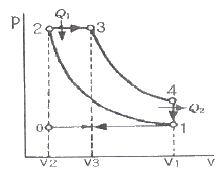
- 오토사이클
- 디젤사이클
- 사바테사이클
- 카르노사이클
(정답률: 알수없음)
71. 체크밸브 또는 릴리프밸브 등 밸브의 입구쪽 압력 강하로 밸브가 닫히기 시작하여 누설량이 어느 규정된 양까지 감소 되었을 때의 압력은?
- 파일럿 압력
- 서지압력
- 리시트압력
- 크래킹압력
(정답률: 알수없음)
72. 유압모터의 기능 설명으로 다음 중 가장 적합한 것은?
- 작동유의 유체 에너지를 받아 축의 왕복운동을 하는 기기
- 작동유의 유체 에너지를 받아 축의 직선운동을 하는 기기
- 작동유의 유체 에너지를 받아 축의 단속운동을 하는 기기
- 작동유의 유체 에너지를 받아 축의 회전운동을 하는 기기
(정답률: 알수없음)
73. 한쪽 방향으로 흐름은 자유로우나 역방향의 흐름을 허용하지 않는 밸브는?
- 체크 밸브
- 언로드 밸브
- 스로틀 밸브
- 카운터 밸런스 밸브
(정답률: 알수없음)
74. 펌프의 압력이 80kgf/cm2, 토출량이 50(ℓ/min)인 레디얼 피스톤 펌프의 소요동력(PS)은? (단, 펌프 효율은 0.85 이다)
- 10.46
- 104.6
- 17.69
- 14.25
(정답률: 알수없음)
75. 다음 중에서 유압유의 첨가제가 아닌 것은?
- 소포제
- 산화 향상제
- 유성향상제
- 점도지수 향상제
(정답률: 알수없음)
76. 보기 기호는 어떤 유압기호인가?
- 서보밸브
- 교축전환밸브
- 파일럿밸브
- 셔틀밸브
(정답률: 알수없음)
77. 불순물 등을 제거할 목적으로 사용되는 여과기는?
- 패킹
- 스트레이너
- 가스켓
- 오일실
(정답률: 알수없음)
78. 유압 프레스의 작동원리는 다음 중 어느 이론에 바탕을 둔 것인가?
- 파스칼의 원리
- 보일의 법칙
- 토리첼리의 원리
- 아르키메데스의 원리
(정답률: 알수없음)
79. 보기와 같은 유압 압력제어 밸브 상세기호의 명칭은?
- 파일럿 작동형 릴리프 밸브
- 전자밸브 장착 릴리프 밸브
- 비례전자식 릴리프 밸브
- 파일럿 작동형 감압 밸브
(정답률: 알수없음)
80. 유압 실린더의 속도 제어 회로가 아닌 것은?
- 로킹 회로
- 미터인 회로
- 미터아웃 회로
- 블리드 오프 회로
(정답률: 알수없음)
5과목: 건설기계일반 및 플랜트배관
81. 얇은 판재로 된 목형은 변형되기 쉽고 주물의 두께가 균일하지 않으면 용융금속이 냉각 응고시에 내부 응력에 의해 변형 및 균열이 발생할 수 있으므로 이를 방지하기 위한 목적으로 사용한 후에 제거하는 것은?
- 구배
- 수축 여유
- 코어 프린트
- 덧붙임
(정답률: 알수없음)
82. 그림과 같이 삼침을 이용하여 미터나사의 유효지름(d2)을 구하고자 한다. 다음 중 올바른 식은? (단, α : 나사산의 각도, P : 나사의 피치, d : 삼침의 지름, M : 삼침을 넣고 마이크로미터로 측정한 치수이다.)
- d2 = M + d + 0.86603P
- d2 = M - d + 0.86603P
- d2 = M - 2d + 0.86603P
- d2 = M - 3d + 0.86603P
(정답률: 알수없음)
83. 강의 표면 경화법에 해당 되지 않는 것은?
- 화염담금질
- 탈탄법
- 질화법
- 청화법(시안화법)
(정답률: 알수없음)
84. 전단가공에 의해 판재를 소정의 모양으로 뽑아 낸 것이 제품일 때의 작업은?
- 엠보싱(embossing)
- 트리밍(trimming)
- 브로칭(broaching)
- 블랭킹(blankinng)
(정답률: 알수없음)
85. 전기저항 용접이 아닌 것은?
- 프로섹션 용접(projection welding)
- 심용접(seam welding)
- 점용접(spot welding)
- 아크용접(arc welding)
(정답률: 알수없음)
86. 구성인선(built-up edge)에 대한 설명으로 옳은 것은?
- 저속으로 절삭할수록 구성인선은 작아 진다.
- 마찰계수가 큰 합금 공구를 사용하면 구성인선은 작아 진다.
- 칩의 두께를 증가시키면 구성인선은 작아 진다.
- (+)의 큰 윗면 경사각을 가진 공구로 가공하면 구성인선은 작아 진다.
(정답률: 알수없음)
87. 강구를 압축 공기나 원심력을 이용하여 가곰울의 표면에 분사시켜 가공물의 표면을 다금질하고 동시에 피로 강도 및 기계적인 성질을 개선하는 것은?
- 버핑(buffing)
- 숏 피닝(shot peening)
- 버니싱(burnishing)
- 나사 전조(thread rolling)
(정답률: 알수없음)
88. 강판의 두께가 2mm, 최대 전단 응력이 45 kgf/mm2 인 재료에 지름이 24mm인 구머을 뚫을 때 펀치에 작용되어야 하는 힘은?
- 약 4568 kgf
- 약 5279 kgf
- 약 6786 kgf
- 약 7367 kgf
(정답률: 알수없음)
89. 선재(線材)의 지름이나 판재의 두께를 측정하는 게이지는?
- 와이어 게이지
- 나사 파치 게이지
- 반지름 게이지
- 센터 게이지
(정답률: 알수없음)
90. 센터리스 연삭기에서 공작물의 이송속도 f(mm/min)를 구하는 식은? (단, d : 조정숫돌의 지름(mm), α : 연삭 숫돌에 대한 조정숫돌의 경사각, N : 조정숫돌의 회전수(r.p.m))
- f = πdNsinα
- f = πdNcosα
- f = πdcosα
- f = πdsinα
(정답률: 알수없음)
91. 밸브, 해머, 로드, 비트 등으로 구성되어 충격 에너지를 로드 끝의 비트를 통해 암석을 착암하는 것은?
- 싱커(sinker)
- 로울(roll)
- 드릴(drill)
- 로드 밀(ro mill)
(정답률: 알수없음)
92. 굴삭 기계가 아닌 것은?
- 백호우
- 불도우저
- 스토퍼
- 클램 셸
(정답률: 알수없음)
93. 아스팔트 피니셔의 주요 구성요소들 중 탬퍼로 다져진 혼합재를 균일한 두께로 다듬질하는 장치는?
- 호퍼(hopper)
- 피더(feeder)
- 스크리드(screed)
- 기관(engine)
(정답률: 알수없음)
94. 흡파 준설선이라고 하며, 준설선 자체의 토장을 가지고 펌프로 흡입된 토사와 물을 토창에 받아 보내는 장소까지 자항하여 보내고, 다시 제자리로 돌아와 작업을 하는 것은?
- 비항펌프 준설선
- 자항펌프 준설선
- 버킷 준설선
- 그랩 준설선
(정답률: 알수없음)
95. 콘크리트 뱃칭 플랜트의 규격으로 옳은 것은?
- 콘크리트의 시간당 생산량(ton/hr)
- 콘크리트의 분당 생산량(m3/min)
- 시공할 수 있는 표준 폭(m)
- 콘크리트 탱크의 용량(리터)
(정답률: 알수없음)
96. 콘크리트 믹서트럭의 규격으로 가장 적합한 것은?
- 콘크리트를 생산하는 시간(시간)
- 혼합 또는 교반 장치의 1회 작업 능력(입방미터)
- 콘크리트 믹서트럭의 작업수(횟수)
- 유제 탱크의 용량(리터)
(정답률: 알수없음)
97. 다음 중 운반기계에 속하는 것은?
- 벨트 컨베이어(Belt conveyor)
- 콘크리트 스프레더(Concrete spreader)
- 아스팔트 플랜트(Asphalt plant)
- 아스팔트 피니셔(Asphalt finisher)
(정답률: 알수없음)
98. 덤프트럭(dump truck)의 동력전달계통이 아닌 것은?
- 클러치
- 트랜스미션
- 분할·장치
- 차동기어 장치
(정답률: 알수없음)
99. 로드 로울러(road roller)를 축의 배열과 바퀴의 배열로 구분할 때 머캐덤(macadam) 로울러에 해당되는 것은?
- 1축 1륜
- 1축 2륜
- 2축 3륜
- 3축 3륜
(정답률: 알수없음)
100. 셔블 굴착기에서 올바른 작업량의 산출식은? (단, Q : 운전시간당 작업량, q : 디퍼의 공칭용량, k : 디퍼계수, E : 작업효율, f : 토량환산계수, Cm : 사이클 타임)
(정답률: 알수없음)